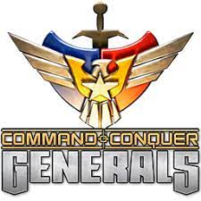
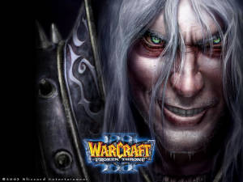
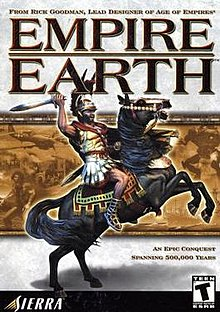
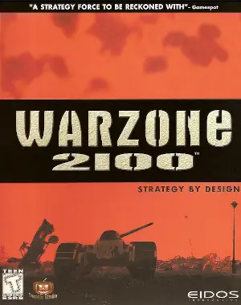

⚒️ Jogos RTS ⚔️
Fique no comando das grandes potências mundiais e decida a vitória com estratégia e rápidez.

| Command&Conquer |
|---|
| C e C ZeroHora |
| Pach correção W10 e W11 |
Este é um game opensource, jogue em modo multiplayer ou contra a máquina livre para baixar e está em constante desenvolvimento. Com belos gráficos você joga com as grandes civilizações do passado. Traduzido em Português. você acessa o Página Oficial para baixar este Game.
Reviva um clássico da Blizzard. Prepare-se para o combate com Orcs, Humanos, Mortos-vivos ou Elfos Noturnos em um mundo de fantasia neste jogo de estratégia em tempo real.

| Warcraft III |
|---|
Este game tem muitas histórias, Nos seguintes links além de poder baixa-lo também tem o patch de tradução
para português e o pacote de expansão:

| Empire Earth |
|---|
| Patch tradução Português |
Jogue este Incrivel Game que é de Código aberto e portanto recebe constantes atualizações. Lançado em 1999 teve grande aceitação podendo ser jogado online com muitos Jogadores espalhados pelo Mundo! Atenção não espere por graficos modernos mas é muito divertido de jogar! Você baixa no Página Oficial a versão mais atualizada! com forums e tudo mais.

| Warzone2100 |
|---|
🏹 Jogos FPS 🔫
Half-Life (estilizado como HλLF-LIFE, meia-vida, em tradução livre) é uma série de jogos de tiro em primeira pessoa, que dividem uma história alternativa de ficção científica. Todos os jogos na série utilizam, ou o motor de jogo Gold Src, ou Source, são lineares, narrativos e de um jogador. O personagem principal da série é Gordon Freeman, um empregado da corporação Black Mesa Research Facility

| Download HL |
|---|